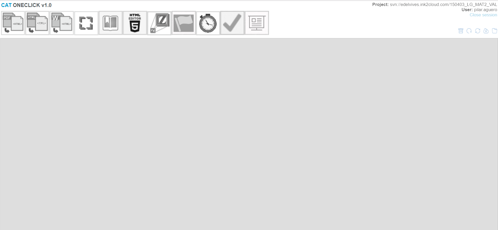
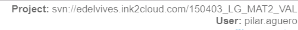
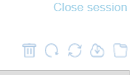
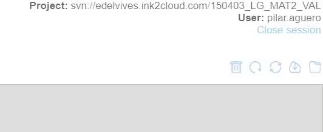
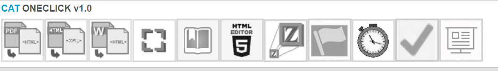

En este manual vamos a ver como se utiliza la herramienta propia de oneclick necesaria para para generar los recursos y contenidos que utilizamos en nuestras publicaciones, denominada CAT (Content Authoring Tool ). Dado que se trata de una herramienta en continuo desarrollo para adaptarnos a las necesidades de nuestros clientes, en este manual trataremos la versión v1.0.
Lo primero que debemos conocer, es que el CAT es una herramienta muy versátil y compleja que permite múltiples opciones para conseguir diferentes estilos de publicación. Por tanto, adaptamos nuestra herramienta a nuestros diferentes clientes, o incluso, a los diferentes proyectos de un mismo cliente. Como ejemplo, podemos indicar que existen diferentes CAT dependiendo de la editorial (CAT de Edelvives, CAT de ByMe, CAT de Oxford, etc.), e incluso diferentes CAT dentro de la misma editorial (CAT Edelvives Primaria, CAT Edelvives Secundaria, CAT Edelvives Méjico, etc.).
Cada uno de ellos, tienen una dirección de url de acceso diferente (se puede utilizar en el navegador que más le guste a cada usuario). Cada CAT tiene sus propias claves de acceso (usuario y contraseña).
Para poder logarse en el CAT es necesario disponer de:


Una vez accedemos, nos encontraremos con esta pantalla o similar:
En la parte superior derecha nos indica el libro al que hemos accedido y el usuario que lo está utilizando (con el que nos hemos logado).
Como ya anticipábamos antes, al tratarse de una herramienta muy compleja, es posible que en primer momento, no se comprendan todos y cada uno de los usos de cada una de las opciones, ya que es necesario ir relacionando y comprendiendo los diferentes procesos a realizar en la digitalización. Todos estos procesos serán detallados en manuales independientes, por lo que en este tutorial se realizará una breve descripción o enumeración de los diferentes elementos que nos encontraremos dentro del CAT.
Existen 3 partes muy diferenciadas:
Este menú se encuentra justo debajo del svn del libro y del usuario logado:
Para poder hacer uso de cualquiera de estos iconos hay que activar esta zona de la página. Para ello, hay que pasar con el puntero del ratón por encima de nuestro usuario (no es necesario hacer clic) de este modo se habilita el puntero para poder pulsar cualquiera de estas opciones, se aprecia que el puntero cambia a “mano”:
Cuando pulsas cualquiera de estos iconos (a excepción de cerrar sesión) se abrirá una pestaña nueva en el navegador, que nos indicará diferentes aspectos dependiendo de la opción elegida.
Dependiendo del CAT que estemos utilizando, las herramientas de edición pueden ser diferentes, ya que, en cada proyecto, se preparan las herramientas necesarias para poder realizar los contenidos que requiere.
Como ejemplo pasamos a enumerar las herramientas del menú de ejemplo, ya que cada una de ellas será objeto de un manual de uso específico:
Puesto que los diferentes proyectos de digitalización de libros que realizamos son muy diversos, es imposible definir su proceso de digitalización de inicio a fin, ya que se utilizarán métodos y herramientas diferentes dependiendo de los casos. Sin embargo, a modo de resumen introductorio pasmos a enumerar los pasos y herramientas más comunes y que con más frecuencia se emplean. Para conocer con mayor profundidad cada uno de ellos habrá que recurrir a sus manuales específicos.
Normalmente la editorial nos proporciona el material en pdf. Puede tratarse de un libro existente en formato papel que se quiere digitalizar, o bien ser contenido específico para web. Una vez se recibe el material se iniciarán los siguientes procesos:
Nuestros libros, además de digitalizar los contenidos como aparecerían en la versión impresa en papel, incluyen diversos módulos con recursos descargables, actividades interactivas, recursos multimedia de diferentes tipos (deepzoom, timeline, videos, audios, karaokes, etc.), generador de evaluaciones para profesores, etc. Por lo que una vez realizados los procesos anteriores o incluso en paralelo, el equipo de edición realiza los contenidos de estos módulos, como, por ejemplo: